Introduction
Statistical Inference - PhD EcoStatData
Homepage
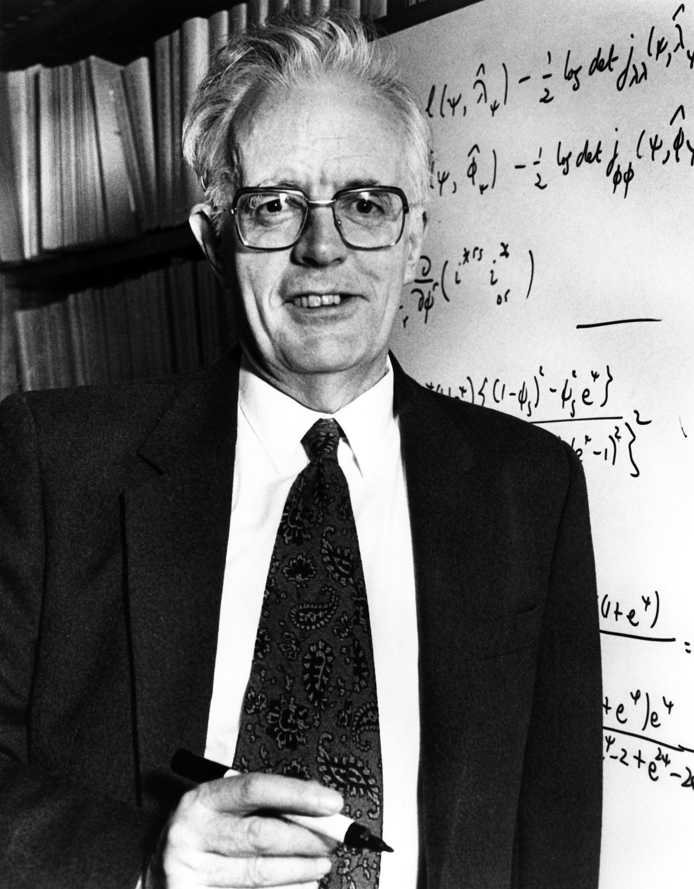
“I would like to think of myself as a scientist, who happens largely to specialise in the use of statistics.”
Sir David Cox (1924-2022)
This course will cover the following topics:
- Point estimation
- Exponential families
- Generalized linear models
- …and more advanced topics
This is a Ph.D.-level course, so it is assumed that you have already been exposed to all these topics to some extent.
We aim to (briefly!) touch upon many key concepts of classical statistical inference from the 20th century.
Fundamental topics such as hypothesis testing are not covered here, as they are addressed in another module.
To introduce the main ideas, I will borrow the words of Davison (2001) — a source you are encouraged to read!
Statistics of the 20th century
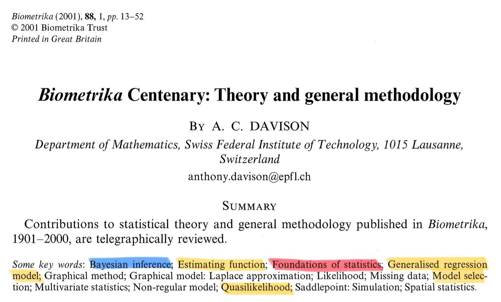
- Biometrika is among the most prestigious journals in Statistics. Past editors include Karl Pearson, Sir David Cox, and Anthony Davison.
Foundations and Bayesian statistics
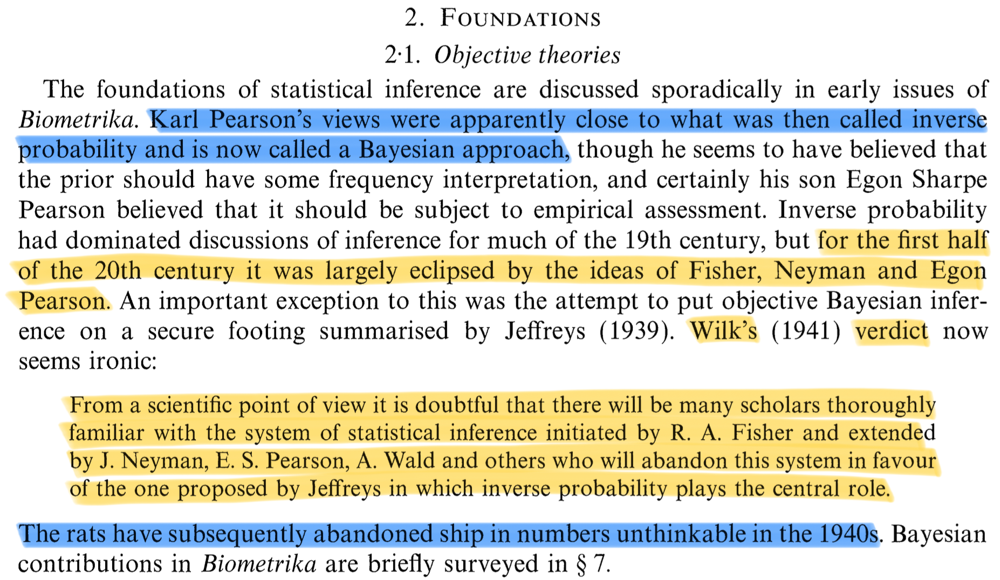
Principles: sufficiency, conditionality and likelihoods
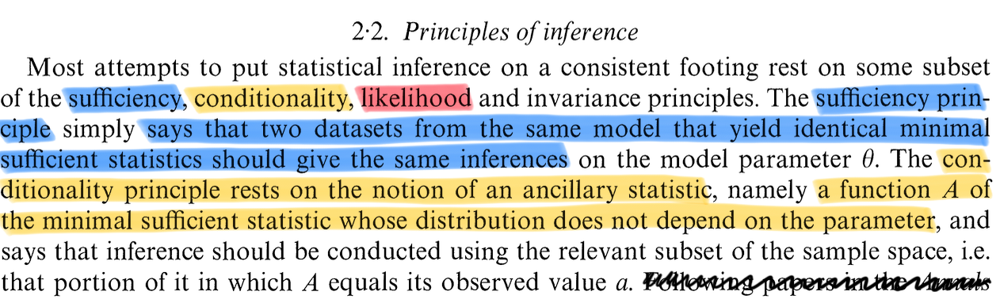
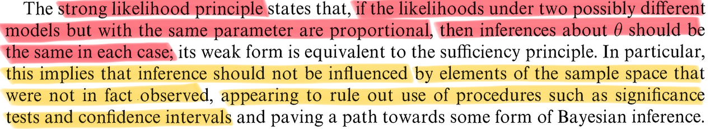
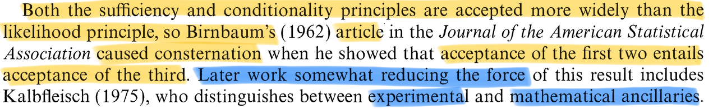
Likelihood
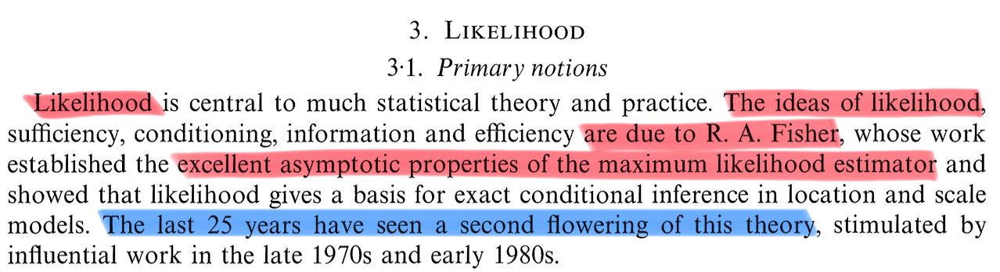
- The study of the likelihood has gone far beyond the classical textbook description. Specialized topics that have attracted considerable attention include:
- Likelihood ratio tests and their large-sample properties
- Conditional and marginal likelihoods
- Modified profile likelihoods
- Restricted maximum likelihood
- Likelihood ratio tests and their large-sample properties
Estimating functions
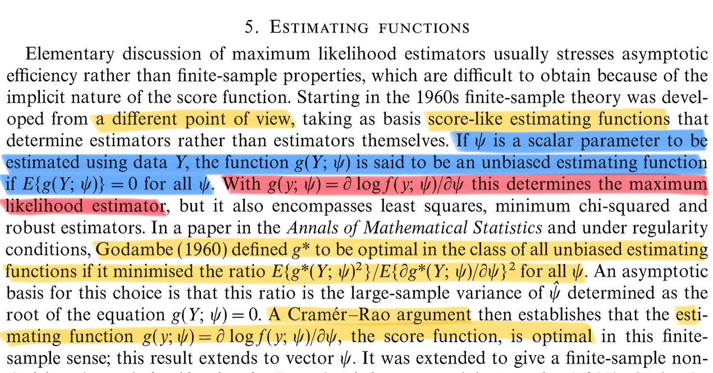
Generalized linear models
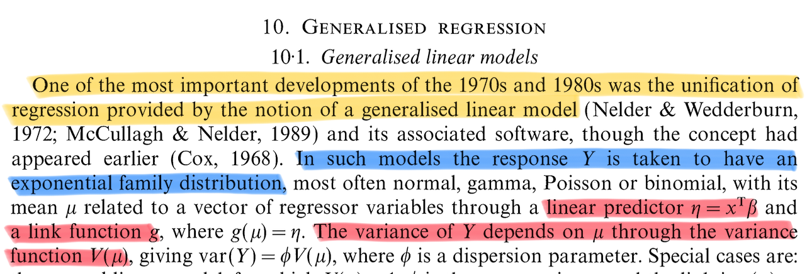
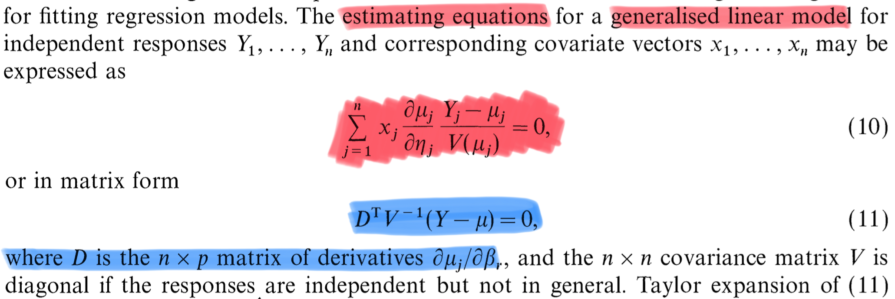
Quasi likelihoods
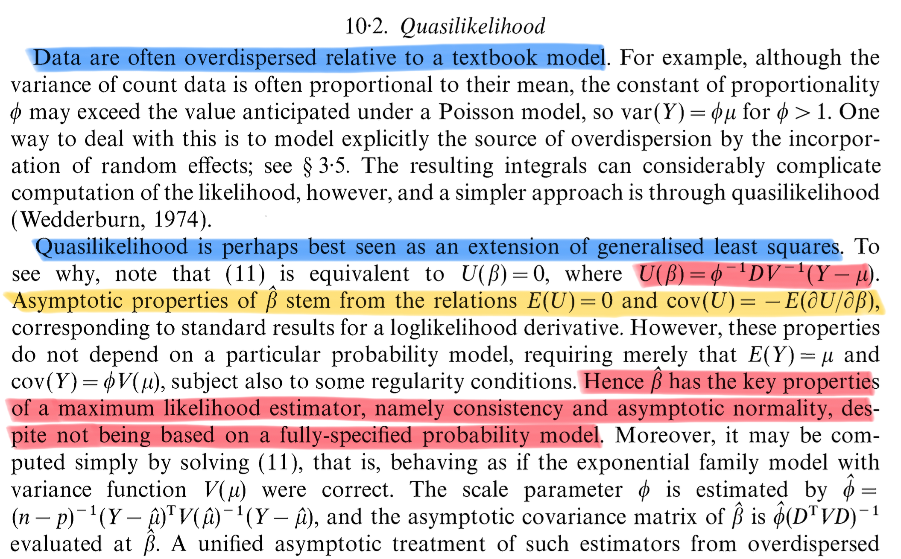
Nonparametric (local) models
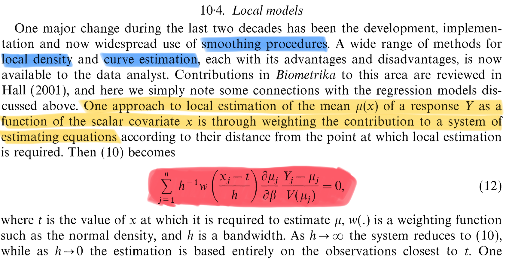
Bayesian methods
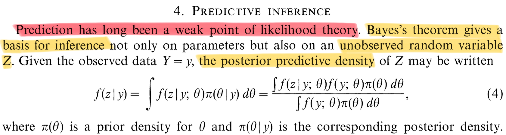
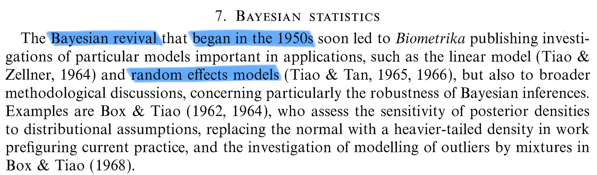
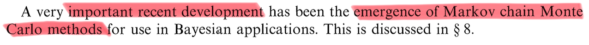
Prerequisite of this course
As mentioned, it is assumed that you have already been exposed to courses on statistical inference before.
Propedeutical topics that I will not discuss here are:
- Asymptotic probability theory, O_p(\cdot) and o_p(\cdot) notations
- Likelihood function: definition and basic properties
- Sufficiency, ancillarity, Fisher factorization theorem, minimality
- Tests based on the likelihood (likelihood ratio, score test, Wald test), asymptotically equivalent forms, confidence intervals
- Linear models, ordinary least squares, exact normal theory
If you are unfamiliar with any of these, please have a look at Chap. 2 and Chap. 3 of Pace and Salvan (1997), and Davison (2003).
Statistical Inference
The key assumption is that observations y_1,\dots, y_n, seen as realizations of the random variables (Y_1,\dots,Y_n) \sim P_\theta, provide information about the generating process P_\theta(\cdot).
We assume that P_\theta is only partially known; that is, it belongs to a model class specified by the tuple (\mathcal{Y}, P_\theta, \Theta), where \mathcal{Y} is the sample space, P_\theta is a probability measure over \mathcal{Y} indexed by \theta \in \Theta, and \Theta is the parameter space.
In this course, we focus on the parametric case, where \Theta \subseteq \mathbb{R}^p. Hence, \theta \in \Theta is a vector-valued parameter that we aim to infer from the data.
If instead \Theta is not a subset of \mathbb{R}^p, then we are in the domain of nonparametric statistics.
A basic requirement is identifiability, meaning that \text{if} \quad \theta_1 \neq \theta_2, \qquad P_{\theta_1} \neq P_{\theta_2}, that is, there exists a measurable set A \in \mathcal{B}(\mathcal{Y}) such that P_{\theta_1}(A) \neq P_{\theta_2}(A).
Dominated statistical models
We will focus on dominated families of distributions, namely we assume there exist a measure \nu(\mathrm{d}\bm{y}) over \mathcal{B}(\mathcal{Y}) such that P_\theta is absolutely continuous w.r.t. \nu for all \theta \in \Theta, that is \forall A\in \mathcal{B}(\mathcal{Y}) \quad \text{ such that } \quad \nu(A) = 0 \quad\implies \quad P_\theta(A) = 0.
Radon-Nikodym theorem then ensures there exists a probability density f(\bm{y}; \theta) such that P_\theta(A) = \int_A f(\bm{y}; \theta)\nu(\mathrm{d}\bm{y}). If \mathcal{Y} \subseteq \mathbb{R}^d, then \nu is typically the Lebesgue measure or the counting measure.
A dominated statistical model is therefore identified by the following class of densities: \mathcal{F} = \{f(\cdot;\theta) : \theta \in \Theta \subseteq \mathbb{R}^p\}, or more precisely by the tuple (\mathcal{Y}, f(\cdot;\theta), \Theta), with \Theta \subseteq \mathbb{R}^p. We will only consider the dominated case in this course.
Likelihood function
Let \mathcal{F} be a dominated (parametric) statistical model and \bm{y} = (y_1,\dots,y_n) \in \mathcal{Y} the observed data. Let c = c(\bm{y}) > 0 be a positive arbitrary constant, the function L : \Theta \to \mathbb{R}^+ defined as L(\theta) = L(\theta;\bm{y}) = c(\bm{y}) f(\bm{y}; \theta), \qquad \theta \in \Theta, is called likelihood function. The log-likelihood function is \ell(\theta) := \log{L(\theta)}.
Some authors set c = 1, but this is debatable. Indeed, defining the likelihood up to a multiplicative factor can be justified in multiple ways:
Intuitively, when comparing the coherency of two statistical models with the observed data, we only care about ratios of the form L(\theta_1;\bm{y}) / L(\theta_2;\bm{y}) where the constant simplifies.
Moreover, this definition does not depend on the choice of the dominating measure \nu.
In particular, the likelihood is invariant under one-to-one transformations of the data, as the jacobian of the transformation can be incorporated into c(\bm{y}).
This is also the original definition provided by Fisher in 1922!
Textbooks
We will use multiple textbooks throughout this course — some more specialized than others. Please treat them as reference materials to consult as needed.
Roughly speaking, they can be organized as follows:
- General references: Casella and Berger (2002), Davison (2003), and Pace and Salvan (1997)
- Point estimation: Lehmann and Casella (1998) and Keener (2010)
- Exponential families: Pace and Salvan (1997)
- Asymptotic statistics: van der Vaart (1998)
- Generalized linear models: Agresti (2015), McCullagh and Nelder (1989)
The book by Davison (2003) is perhaps the most accessible among the listed texts. You are encouraged to refer to it if you need to review or catch up on prerequisite material.
In addition, specialized articles and resources will be discussed throughout the course to complement the textbook material.
The future
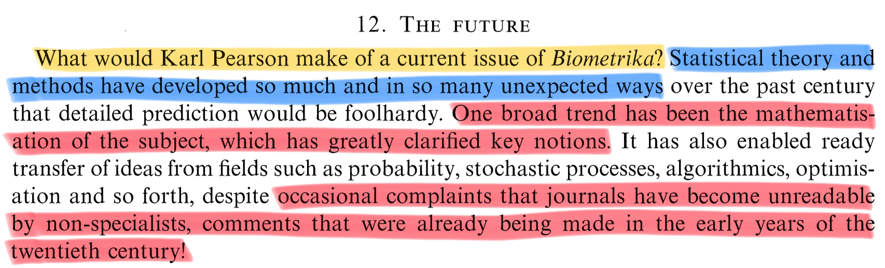
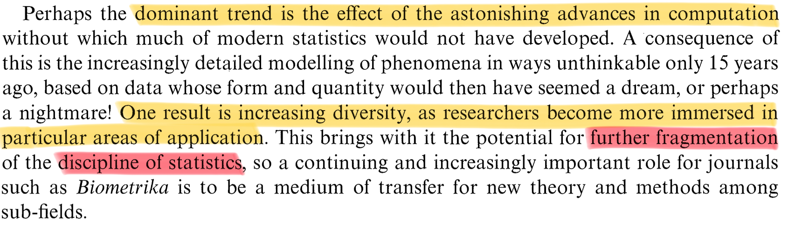
Cynical and questionable advice for a young investigator
Strive to publish in top statistical journals, such as: Annals of Statistics, Biometrika, Journal of the American Statistical Association, Journal of the Royal Statistical Society: Series B.
However, keep in mind that both quality and quantity matter. Aim to have at least 2–4 submitted or published papers by the end of your Ph.D. — the more, the better.
Focus on a niche trending topic. Make sure you are part of a large and established group of researchers who actively promote the topic you are working on.
Become an expert in your niche, and learn how to write about it and promote it effectively. In a nutshell, learn how to play the game.
Closely follow the suggestions of your advisor — they know better than you how to navigate the system and can guide you through many political and scientific challenges.
Do not wast time on activities that do not produce papers. This include:
- Teaching to undergraduate students
- Disseminating your work to the broader community, beyond academia
- Studying topics unrelated to your niche area
Deconstructing the cynical advice
The former is a list of concrete recommendations (easier said than done, especially about publishing on top journals) that may help you secure a permanent position in academia.
I do not fully agree with those rules: there is more to pursuing a Ph.D. than just “getting a job.”
These suggestions may change over time and do not necessarily apply to other fields. Moreover, keep in mind academia, in the short period, is also a game of chance.
I recognize their effectiveness, but there are, I think, some uncomfortable consequences.
Advice for a young investigator
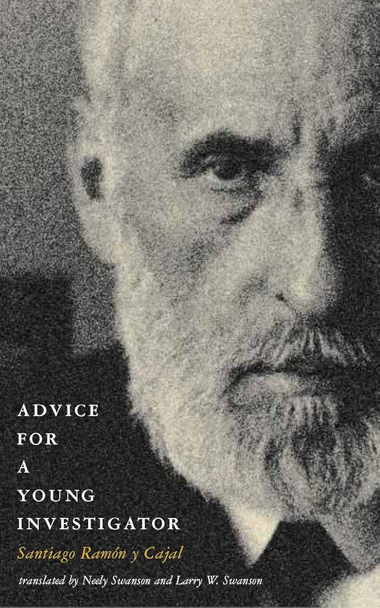
Santiago Ramon Y Cajal (1852–1934)
The former list of practical advice is probably effective but questionable. For sure, it lacks perspective.
In looking for principles defining a good researcher, I once again need to borrow the words of somebody else.
Santiago Ramón y Cajal is a fascinating personalities in science. He was one of the most important neuroanatomist of his century.
Cajal was also a thoughtful and inspired teacher.
“The advice” became vehicle for Cajal to write down the thoughts and anecdotes he would give to students and colleagues about how to make important original contributions in any branch of science.
This book was written in 1898. The world was different, and so was academia. Yet, the book feels remarkably modern.